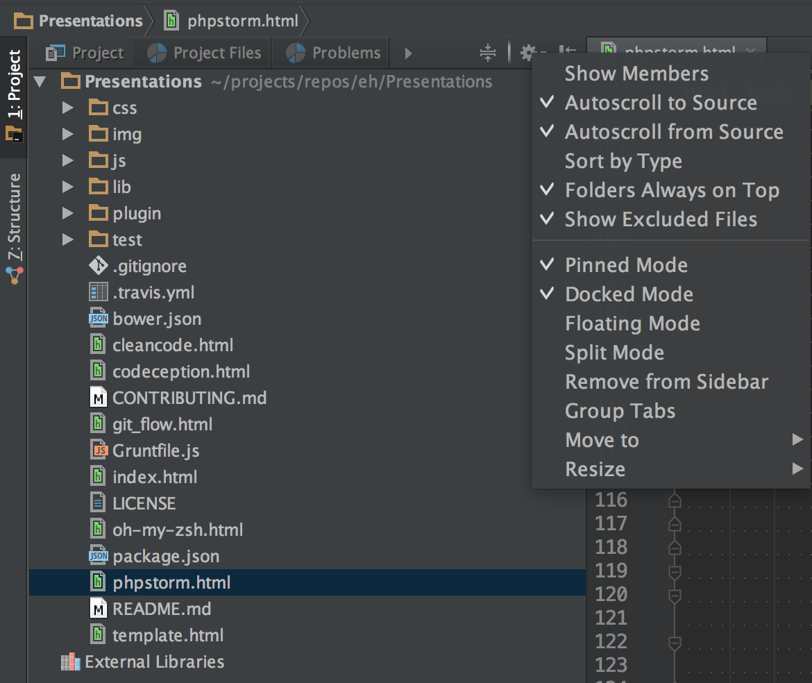

PhpStorm best practice
Entwicklungshilfe
entwicklungshilfe.nrw / @help_for_devs /
FB/entwicklungshilfe.nrw
Black
White
EH
PhpStorm Topics
Mac setting
General settings
Project settings
Advanced actions and shortcuts
Plugins
Working with PhpStorm
Sources
Mac settings PhpStorm
Shortcuts
cmd + <
switch open window
Memory settings
siehe Hangout
General settings
- Themes
- Fonts
Themes
- Dracula
- Solarized dark
Fonts
- Hack
Project settings
- Code style
- Editor
- PHP
Code style
PHP -> Tabs and indents -> uncheck use tabs PHP -> Wrapping and braces -> uncheck comment at first column uncheck line breaks
Editor
Is global setting File and Code Teplates -> Includes -> PHP file header -> Beispiel
Languages and frameworks
PHP brew install php search for it language level and interpreter match Check xdebug match port Servers clean use automate Codesniffer
Advanced actions and shortcuts PhpStorm
img
Line
Move line (Shift + Alt + up / down) Line Duplicate line (cmd + d) Remove line (cmd + del)
Curser
horizontal moving (alt + arrow left / right ) Select (shift + alt + Pfeil links / rechts) Select section (alt + arrow up) Begin (cmd + left) / End (cmd + right)
Navigate
Method new setting Previous method ctrl+alt+arrow up Next method ctrl+alt+arrow down
Multi curser
Select variable crtl + g on variable select next crtl + cmd + g on variable select all not full match Blocks jump with alt Only curser + mouse click
Documentation
Phpdoc (cmd+n PhpDoc + cmd a + enter)
Auto complition
crtl + space
ÅRefactor
crtl+t
ÅResize font
add cmd + 0
Navigate file structure
cmd + arrow up also auto comletion
Colors and fonts PhpStorm
Colors
Darcula
Fonts
research
Basic settings PhpStorm
Open and scrolling

Open file directly on click. Scroll to actual file.
Basic settings PhpStorm
Key settings add PhpStorm
Working with PhpStorm
Sources PhpStorm